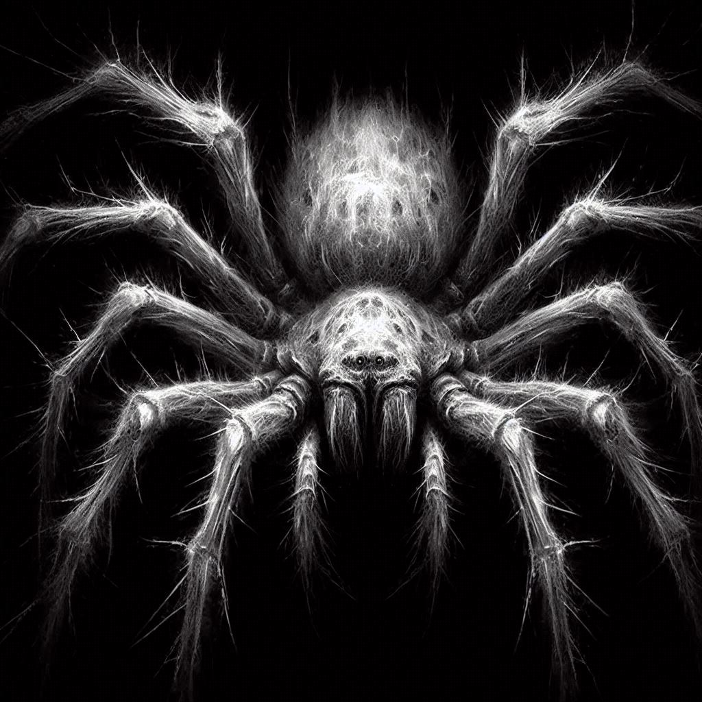

Cathode Reality Tales
Story 3- "The Watcher"
(written by: Louis Anthony)
- - - -
In a dimly lit room, the only source of light is the flickering of an old television set casting eerie shadows along the walls. The screen crackles to life revealing a figure upon the screen shrouded in a haze of static and smoke. “Welcome, viewers, to Cathode Reality Tales.” The voice was smooth, almost hypnotic. The figure stepped closer, and the static resolved into the form of a middle-aged man dressed in a sleek, dark suit.
“Tonight,” the man continued, his eyes piercing through the screen, “we peel back the layers of your screen to reveal a world where reality twists and turns, and the familiar becomes the grotesque. I am your guide, Ray Toob. Imagine, if you will, waking up in a body not your own, watching as your life unfolds beyond your grasp. Our protagonist will soon realize that sometimes, the unseen threats are the most terrifying.”
Ray paused, letting the suspense hang in the air. “Tonight’s tale ventures into the quiet town of Orswell, where what crawls on your skin can crawl into your nightmares.”
The screen fades to black, the echo of Ray's voice lingering like a ghostly whisper.
- - - -
The dishes clattered in the sink as the faucet ran. Jack Hopper stood next to the sink cleaning his dishes after his lonely breakfast. Jack lived alone and was a nighttime security guard at a local storage rental facility. What most people called dinner, Jack called breakfast
BEEP*BEEP*BEEP*
The alarm sounded. Jack had twenty minutes to be out the door or he would be late for work. Jack finished his last dish and turned off the water. As he set the dish in the rack and wiped his hands on a towel he caught sight of it and jumped back.
A hideous hairy spider was perched on the countertop, staring up at Jack. Jack slowly backed up and grabbed the newspaper off his table. Carefully he rolled it up and then brought it down on the spider.
"Gross," he said as he checked to ensure he got it, and smiled when he saw that he had. He threw the paper away and then finished getting ready. Jack locked his door and walked the three blocks to his work.
He wasn't sure why but he had a bad feeling on his walk. The sun was shining and the autumn leaves were bright and colorful, but he felt like he was being watched. More than just from the occasional traffic cameras at the intersections. He couldn't help but glance over his shoulder. He joked to himself about being paranoid and chuckled the thought away.
Jack arrived at the storage facility just as the last rays of sunlight dipped below the horizon. He greeted the daytime staff with a nod as they clocked out and he clocked in. The familiar routine usually brought a sense of comfort, but tonight was different. Tonight, every shadow seemed to stretch a little longer, every noise a little sharper.
He made his way to the control room, glancing at the array of monitors that displayed feeds from various parts of the facility. Everything looked normal, but the unease from his walk lingered. Shrugging it off, he grabbed his flashlight and started his rounds.
Jack trudged through the dimly lit corridors of the storage facility. The hum of the fluorescent lights above did little to calm his growing unease. As he checked each unit, his flashlight beam landed on a cluster of spider eggs on the corner of a storage door. Without thinking, he stomped on them, feeling a shiver run down his spine. "Just great," he muttered, the crunching sound echoing in the quiet hallway.
Jack continued to feel uneasy throughout his shift. No matter how many times he checked to make sure he was alone, he couldn't shake the feeling of being watched. He was absolutely certain something was watching him from somewhere.
Eventually, his shift ended and he went home, stopping for some dinner—a plate of eggs and hash—at a local diner a block further from his house. Jack didn't mind the extra distance because the food was good, and he had a thing for the cook. After finishing his meal, he went home.
Once he arrived home, he tidied up, putting away his leftovers, ensuring his laundry was squared away, and brushing his teeth before crawling into bed. As he was brushing his teeth, he watched as a spider dropped in front of him onto the faucet.
"Where do these gross things keep coming from?" he asked, stealthily grabbing some tissue, then crushing and flushing the arachnid. He shuddered, shook off the unease, and finally crawled into bed.
BEEP*BEEP*BEEP*
The alarm blared and Jack woke up, the red numbers flashing 8:00 PM. But something was off. He tried to hit the snooze button, but his hand didn't move. In fact, his whole body felt... detached.
He blinked, or rather, he thought he blinked. He could see his body sit up in bed, rub its eyes, and stretch. It moved mechanically, like a puppet on strings, getting dressed and heading to the bathroom. Jack felt a wave of panic. He wasn't in control. He wasn't in his body.
From his new, unseen vantage point, he watched as his body went through the motions of the morning routine—showering, making breakfast out of the leftovers from yesterday's dinner, brushing his teeth, combing his hair, and putting on the security uniform. It was surreal, like watching a movie where he was the unwilling star.
As his body headed out the door, Jack’s perspective seemed to shift. He found himself high up in the corner of his bedroom like he was perched on the ceiling. He felt his heart—or what he thought was his heart—racing. What was happening to him? Why couldn't he move?
Then, as his body walked down the street, Jack realized he wasn't just watching from above. His vision was fragmented, like looking through multiple eyes at once. He saw the world from every direction at once. It was dizzying. It took some time, but he finally managed to figure out how to control where he was looking.
After he figured it out, he found himself again, located at the end of his shift, clocking out. He watched as his body even stopped and got his usual Tuesday dinner special. Tuesday was Burger Day at the diner, and he convinced the cooks to offer a cheeseburger omelet. He figured that was impressive at least.
While he was busy being impressed his body went home and tidied up, putting away his leftovers, ensuring his laundry was squared away, and brushing his teeth before walking into the kitchen. This was normally the part where Jack crawled into bed. What was his body doing in the kitchen?
Jack watched unable to move or look away as his body turned on the stove, then placed his right hand on the burner and held it until the skin started to smoke. Just before the smoke started to come off the skin Jack's body turned its head to look directly at Jack who was watching from the counter. Jack then turned off the stove, ran cold water over his hand, wrapped it up with some of the bandages from the medicine cabinet in his bathroom, and then crawled into bed. Jack was back where he started the morning and found himself feeling exhausted from the roller coaster of emotions he had felt. It wasn't long before he closed his eyes and drifted off to a dreamless slumber.
BEEP*BEEP*BEEP*
The alarm blared and Jack woke up instantly aware of the throbbing pain in his hand. The red numbers flashed 8:00 PM, and the memory of what his body had done came flooding back, making him feel queasy. He decided he couldn't go to work; he needed medical attention.
He fumbled for his phone, his hand shaking as he dialed his boss’s number. The phone rang twice before a gruff voice answered.
“Hey, it’s Jack.Yeah, Hopper. Listen, I’m not feeling well... I need to take a sick day,” he mumbled, trying to keep the panic out of his voice. After a moment’s pause, he got a terse, “Fine. Feel better,” before the line went dead.
Breathing a sigh of relief, Jack dressed quickly and headed to the hospital. His mind raced as he thought about how to explain his injury without sounding insane. When he arrived, he was guided to the emergency room, where a nurse examined his hand.
“Well, Mr. Hopper, what happened here?” she asked, concern etched on her face.
Jack hesitated, then said, “I burned it... cooking accident.”
She nodded and proceeded to clean and bandage the wound before sending him off to a doctor. The doctor’s concerned frown didn’t ease Jack’s anxiety.
“You’re lucky it’s not worse. We’ll need to keep an eye on this. Any other symptoms? Feeling dizzy or anything?”
Jack shook his head, not ready to divulge the bizarre experiences of the past day. The doctor gave him some painkillers and advised rest.
Before he leftJack hesitated, then asked, “Is there a night psychiatrist available? I really need to talk to someone.”
The nurse looked surprised but understanding. “Let me check,” she said, and after a few moments, she nodded. “We have a psychiatrist on call. You can wait in the consultation room.”
Jack felt a wave of relief wash over him as he was led to a small, dimly lit room. He sat there, his thoughts racing. Suddenly, he caught sight of a spider crawling across the table. The sight of its hairy legs made his skin crawl.
“Disgusting,” he muttered, grabbing a nearby tissue. With a quick, disgusted movement, he squished the spider, making a sound of unease. He smiled after tossing the tissue in a nearby wastebasket and then adjusted his posture. He looked around the waiting room, and suddenly felt his vision double. He tried to blink the effect away, but it only got worse no matter what he did.
It was only a matter of seconds before he felt the world tilt and everything went dark.
HEEP*HEEP*HEEP*
A terrible sound woke Jack. It sounds like a child imitating his alarm but by hissing like a cat right into his ears. He started to look around for the flashing red lights but the only red light he saw was the exit sign above the door to the consultation room, behind a smiling... Jack?!
Jack's mind began to scramble. He was watching himself from a small corner of the room talk to what he assumed were doctors and psychiatrists. They all seemed happy and carefree. Jack tried to scream but couldn't hear anything. Jack watched in horror as the Doctors shook his hand and released him smiling back into the world. Jack's mind raged against itself howling with mad fervor for the doctor's to stop him, but to no avail.
Jack, realizing where he was and quickly changed his view to follow himself and see what terrible thing his body would do next. He lost sight of himself once he left the hospital and got lost in the morning crowd he wasn't used to surveying. 'How long had he been passed out?' his mind panicked.
The world blinked, the kaleidescope of perspectives colliding into darkness and when they reappeared Jack found himself thrust ito a particular vision of the world from a great height. He was falling gracefully. It was beautiful, serene, peaceful even, if but for just a moment. He found himself letting go and accepting this was perhaps all nothing more than a bad dream.
Almost as quickly as had he gotten comfortable with the thought that he would soon awake in his bed and this would all be a thing of the past he found himself sitting on his own shoulder. He tried to calm down as he was ferried into his bank on his own shoulder. He was confused what was going on as he watched himself remove all of his money and happily close his account.
He was sure this was dream at this point, what would his body be doing like this? Why would it be doing this? Why couldn't he stop himself? Was this schizophrenia? His mind spiraled ito a complete panic on his shoulder as Jack's body walked into the diner and ordered a meal. After he ate he left all of the money on the table with a note that it was for the cook, and he left.
Jack, who was at the point of complete mental breakdown in this nightmare prison continued to watch as he dropped the keys to his apartment into the cup of a homeless man and continue walking all day. Jack was a complete mess, to the point that words could no longer form by the time the sun began to set and Jack's body walked outside of town and into the woods. Jack had no idea where his body was going, and there was nothing he could do except go along for the ride.
Eventually, at some point, a little after nightfall Jack's body entered a cave and everything became black. Jack could feel the body walking forward for what felt like forever. Eventually the feeling decreased as the feeling of something sticky all over him increased. He thought about it and found it incredibly strange that for the first time in this nightmare he could feel his hand. He tried to move it and realized he was back in his own body, but there was something icredibly tense and sticky making it increasigly hard to move.
He started to struggle when he felt something sharp puncture hard into his neck. Two things to be precise, like something large was stabbing or biting him. He started to panic and struggle harder, but it only seemed to make him more tired, and it only took a few seconds for him to stop altogether.
Breathing at that point had became a chore and his entire being became tired, as if it had been restless forever and was finally on the precipice of sleep. He blinked and swore that he was floating again. The feeling of peace from earlier had returned only this time it was like falling in reverse. He found himself again in a dreamlike state of being as he was lifted out of the dark cave and toward a dark and starless sky.
When he finally had finished his ascent from the darkness of the cave to the darkness of space he stopped. He just floated for a moment in tranquil peace among the void. It was then the spider appeared. Large enough to swallow Jack as though he were an insect, it bore down upon Jack and drained him into absolute nothingness.
As the spider faded back into the blackness after consuming its meal, Ray Toob stepped forward from the darkness. “And so, dear viewers, remember—eyes are everywhere and the watchers blend into shadows, unseen. Trust nothing; not even your own reflection. In the realm of the Cathode Reality, freedom is an illusion, and those who feel in control are merely dancing to invisible strings. We are all subjects of forces that shape us, strip us of choice, and rewrite our lives, whether we know it or not."
Ray’s gaze lingered, the static intensifying as he continued: "Until next time, keep your eyes open and your senses sharp. You never know what might be lurking just beyond the screen.”
With a final, lingering glance, Ray Toob faded into the static, leaving viewers with a chilling sense of unease and a reminder of the mysteries that lie just beyond their perception.
- - - - 